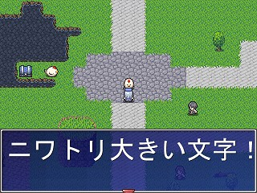
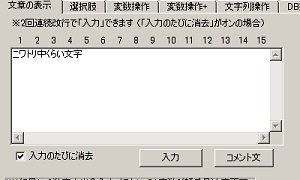
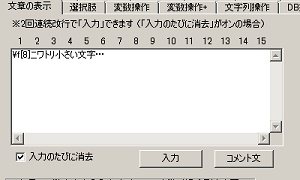
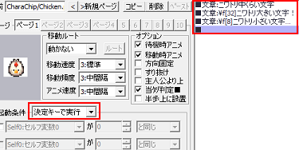

・まずマップ選択
切り替えて下さい。
・適当な場所にイベントを作成して
ニワトリの画像を設定しておきます。
（ここでは右の画像の位置に設置）
→ 分からないときは、
◆新しいイベントを作ってみたいの
【1】〜【5】までの手順をまねてください。

【目標】
普通の文字と大きな文字、小さな文字を表示するメッセージを作ります。
ここでは、サンプルゲーム内の「サンプルマップA」内に、
最初に普通の文字で「ニワトリ中くらい文字」、
次に大きな文字で「ニワトリ大きい文字！」、
最後に小さな文字で「ニワトリ小さい文字…」と話すニワトリを作ります。

| 【1】 ・まずマップ選択 切り替えて下さい。 ・適当な場所にイベントを作成して ニワトリの画像を設定しておきます。 （ここでは右の画像の位置に設置） → 分からないときは、 ◆新しいイベントを作ってみたいの 【1】〜【5】までの手順をまねてください。 | |
| 【2】 ・ニワトリが「ニワトリ中くらい文字」と話すように 文章の表示処理を追加します。 → 分からないときは、 ◆新しいイベントを作ってみたいの 【7】〜【10】の手順をまねてください。 |
 |
|
【3】 先程と同様に、こんどは 「ニワトリ大きい文字！」と入力します。 そして、文字の大きさを変更する為に、 行頭に「\f[32]」と入力します。 「\f」がフォントサイズを変えるよ、という意味で、 「[32]」がサイズは３２だよ、と言う指定です。 |
|
【4】 次は小さく 「ニワトリ小さい文字…」と表示させます。 文字を小さく表示するのも大きく表示するのも、 「サイズの指定が大きいか小さいか」 という違いだけで、行うことは同じです。 なので、行頭に「\f[8]」と入力します。 |
 |
|
【5】 これで文字サイズの違う３つの発言をする ニワトリのイベントが完成しました。 完成したイベントの設定は、 下記のようになっていますでしょうか。 １：左下、起動条件が「決定キーで実行」 ２：右側、イベントコマンド表示欄に ■文章：ニワトリ普通の文字 ■文章：\f[32]ニワトリ大きい文字！ ■文章：\f[8]ニワトリ小さい文字… ■ と表示されている。 |
 |
|
【6】 さて、マップをセーブして、 作ったイベントをテストしてみましょう。 「セーブ（マップ全体）」をクリックした後、 「テストプレイ」をクリックしてください。 |
 |
| 【7】 右の画像のように、大きな文字で「ニワトリ大きな文字！」と メッセージが表示されていれば、大きな文字の表示は成功です。 お疲れ様でした。 |
|
【余談】 サイズの大小は、デフォルトの値に対する相対的なものです。 基本的に、初期の段階ではデフォルトのサイズは「12」となっています。 なので、「\f[12]」でデフォルト（指定無し）のサイズに、 「\f[10]」など１２以下の値で小さいサイズに、 「\f[14]」など１２以上の値で大きいサイズになります。 ちなみに、この値はシステム変数の８番「基本フォントサイズ」で設定されており、 変数操作で変更する事で、指定無しの状態の文字サイズを変更する事ができます。 |
＜執筆者：Barong＞